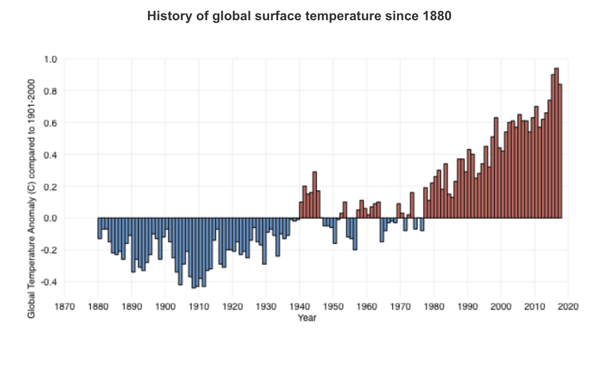

Climate.gov complied the history of global surface temperature since 1880 as reported by “Climate Change: Global Temperature.” The global temperature anomaly has increased since 1980.
Climate.gov - Climate Change: Global Temperature.
The effects of climate change are more evident each year. The average temperature of the world has shifted; the last ten years show a significant rate of change. When calculating temperature change of earth throughout time, the global average temperature is found for each year. Global average temperature is found by compiling the annual average temperature reported in each country, each year. The concept of a global average temperature is convenient for detecting changes in Earth's temperature over time.
According to the international State of the Climate in 2017 report, “Since 1901, the planet’s surface has warmed by 0.7–0.9° Celsius (1.3–1.6° Fahrenheit) per century, but the rate of warming has nearly doubled since 1975 to 1.5–1.8° Celsius (2.7–3.2° Fahrenheit) per century.
The last ten years are extremely crucial, as the top ten warmest years on record have continued to shift forward in time. As reported by climate.gov, “The 10 warmest years on record have all occurred since 1998, and the four warmest years on record have all occurred since 2014. Looking back to 1988, a pattern emerges: except for 2011, as each new year is added to the history, it becomes one of the top 10 warmest on record at that time.” Each year the ten warmest years on record shift forward.
The 10 warmest years on record have all occurred since 1998, and the four warmest years on record have all occurred since 2014.
The World Bank Climate Change Project provides data from the year 1901. The Near Surface Annual Mean Air Temperature (tas) from 1975 to 2015 is shown below.
Chart: Click here
When arranged in ascending order, we can see that between 1998 and 2015, values reaching the threshold of 8.0 become more frequent. Four of the five highest values occurred between 2005 and 2015.
Chart: Click here
According to the NASA Goddard Institute for Space Studies, between 1998 and 2008, the average temperature change values were between 0.45 and 0.65. In only six years, between 2010 and 2016, Gobal Mean Air Temperature change has climbed to values between 0.7 to 1.0. Both the temperature change and the rate of increase have shifted in the last ten years.
Chart: Click here
Natural Disasters
The world's natural disasters rose steadily between 1900 and 2000. The total number of natural disasters increased 51 percent between 1997 and 2000. The year 2000 reached a peak of 526 disasters. Since then, disasters have decreased slowly, averaging at 425 for the past 15 years. 2017 was the first year the world experienced less than 300 disasters since 1996.
Chart: Click here
Rise in air temperature contributes to more natural disasters. More extreme temperatures, i.e., greater fluctuation between hot and cold contribute to less stability in weather patterns causing natural disasters, subject to sensitivity in weather changes. These include higher frequency of natural disasters caused by excessive heat and cold, such as extreme temperature, drought, wildfires, floods, volcanic activity, and earthquakes.
More extreme temperatures correlate with higher occurance of natural disasters. Since the year 1900, the highest number of natural disasters occurred between 2000 and 2007– the same years when temperatures were most extreme.
Chart: Click here
One example of the increase of natural disasters is the prevalance of tornadoes in the USA. The chart below shows the number of tornadoes between 2005 and 2011. In 2011, tornadoes increased heavily in a pattern southeast of the Appalachian Mountain Region. Tornadoes occurred in a diagonal pattern along the states of Tennessee, Georgia, Alabama and Mississippi.
Tornadoes in the USA, 2005-2011